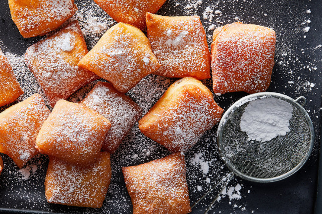

Выпечка
Сырные булочки на пиве

Эти мягкие и насыщенные вкусом сырные булочки на пиве вряд-ли оставят кого-либо равнодушным. Благодаря пиву они получаются особенно мягкими и воздушными. Лучше всего подавать их теплыми и, разрезав пополам, смазать сливочным маслом (рецепт).
Французские пончики Бенье
Французы, возможно, были первыми, кто придумал поджарить дрожжевое тесто в кипящем масле — то есть придумали пончики. Во французских кварталах Нового Орлеана пончики или пышки Бенье (Beignets) стали настоящим хитом и зачастую у жителей города день начинается и заканчивается порцией таких пончиков. Легкие, воздушные в инее сахарной пудры — они отлично дополняют собой утренний кофе или вечерний чай (рецепт).
Пирожки из слоеного теста с сыром фета и зеленым луком

Отличные , очень простые и быстрые закусочные пирожки из слоеного теста с сыром фета и зеленым луком. Их очень удобно подавать как закуску к бульону, вину или пиву, впрочем и как пирожки на завтрак в выходной день, они тоже очень хорошо подойдут. Часто такие пирожки подают в греческих ресторанах как комплимент от шеф-повара (рецепт).